Scrolling Examples
Ok, I have example video for each of these sites - but something is up with my current presentation code where the web page doesn't want to load all the examples onto the same page at one time. So much for scrolling!
So, I have organized my examples below, in roughly the order I was planning on presenting them.
Click on the image to see the video of the scrolling example
Scrollable Dimension
These are examples of using scroll to show a dimension of the data. They aren't technically very interesting, but will be fun to get things started (or end with).
- 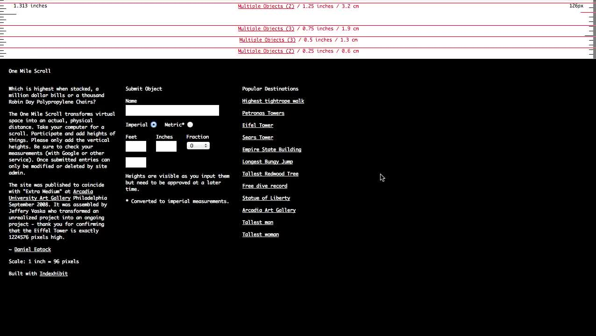 - One Mile Scroll
- 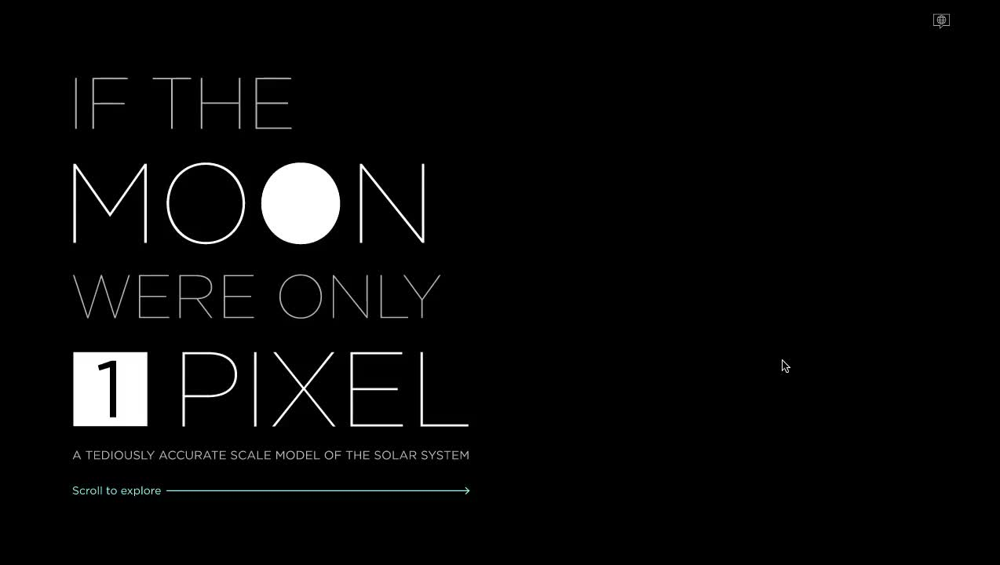 - 1px Moon
 - Active Satellites
- Active Satellites
- 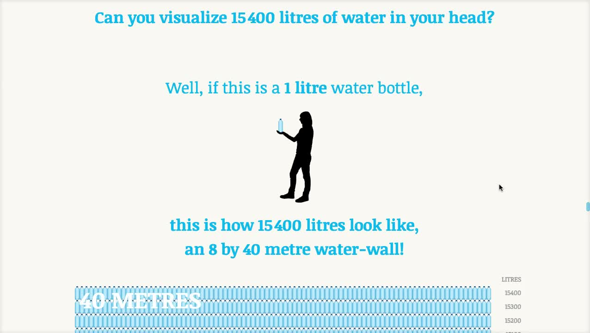 - Eating Water (toward the middle of the vis)
Scroll as a Trigger
For these, the scroll just starts an animation or visualization. Here, the act of scrolling to a part of the page indicates the viewers readiness to ingest a new piece of content.
Scroll as Steps
Scrolling can move the viewer through different steps or segments of a visualization. These examples replace the stepper with scrolling.
- 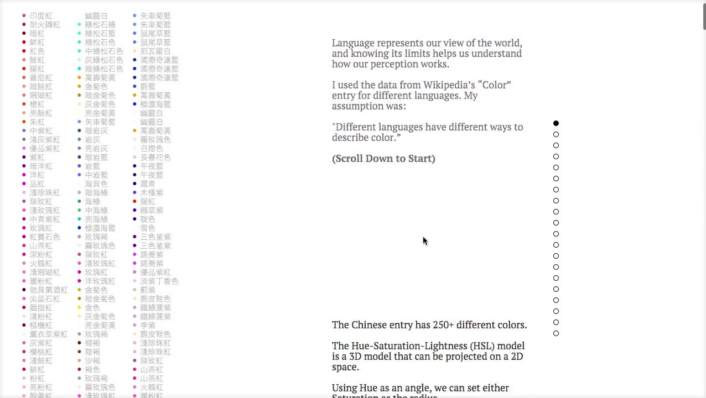 - Color Meaning
- 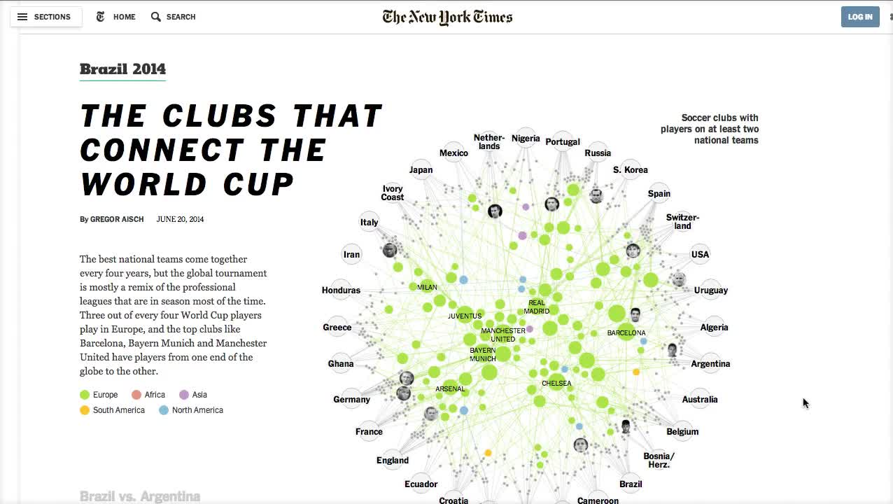 - Clubs that Connect
- 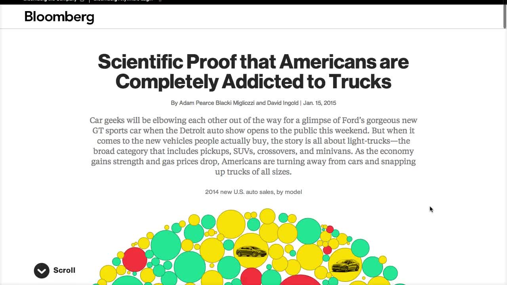 - Auto Sales
- 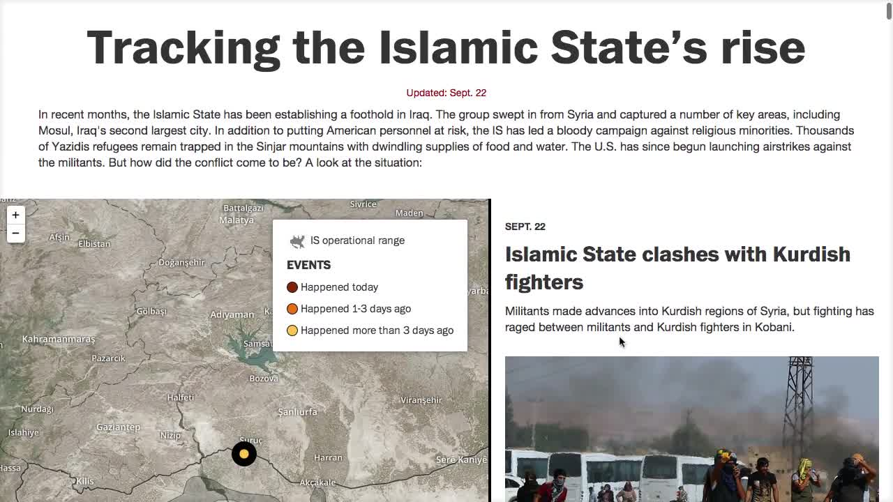 - Islamic States
- 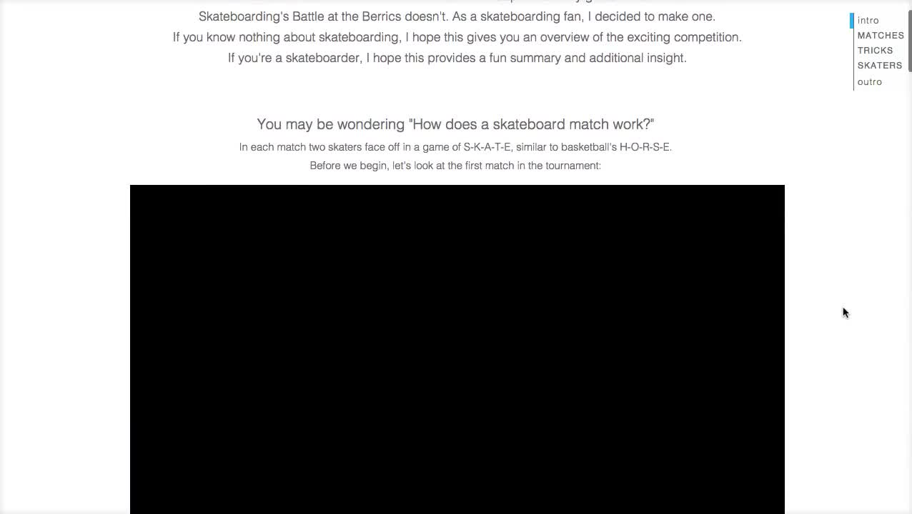 - Battle of the Berrics
- 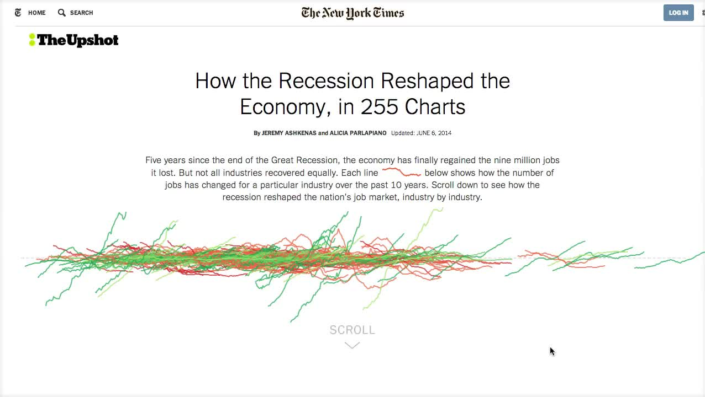 - Recession Charts
Continuous Scrolling
Next, instead of atomic increments in the story, the scroll can be incorporated into a continuous transition of the data that is being displayed.
- 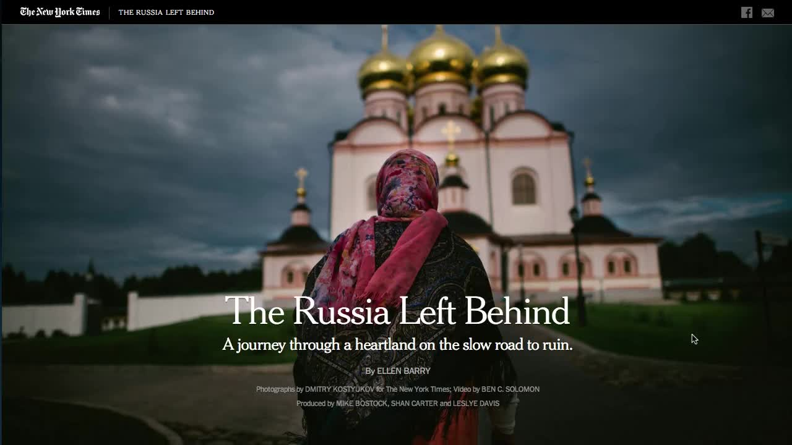 - Russia Left Behind
 - Marathon Videos
- Marathon Videos
- 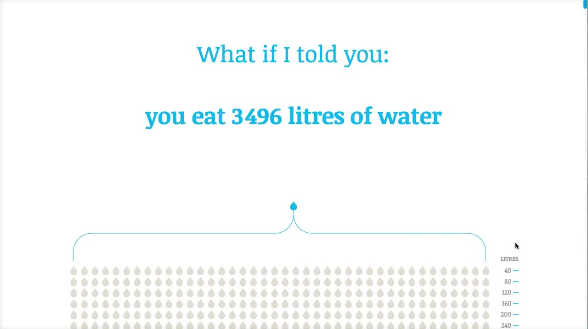 - Eating Water
- - Lets Free Congress (need to get video from this one)
- 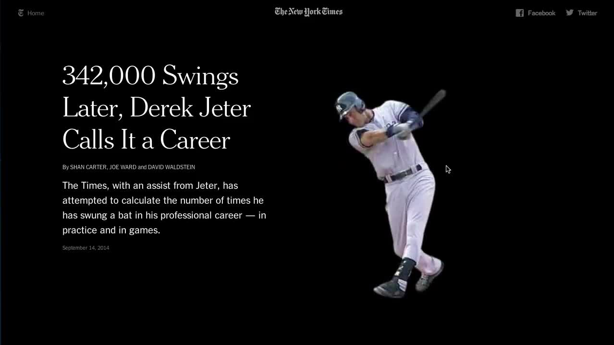 - Jeter Swings
 - Dawn Wall
- Dawn Wall
Scrollytelling
Finally, when continuous scrolling is combined with the presentation of many different media types, we reach scrollytelling. Most famous is probably still Snow Fall. Typically combines text with video and images, but there is no reason why interactive components could not be presented in the mix too.
- - Daft Punk
- 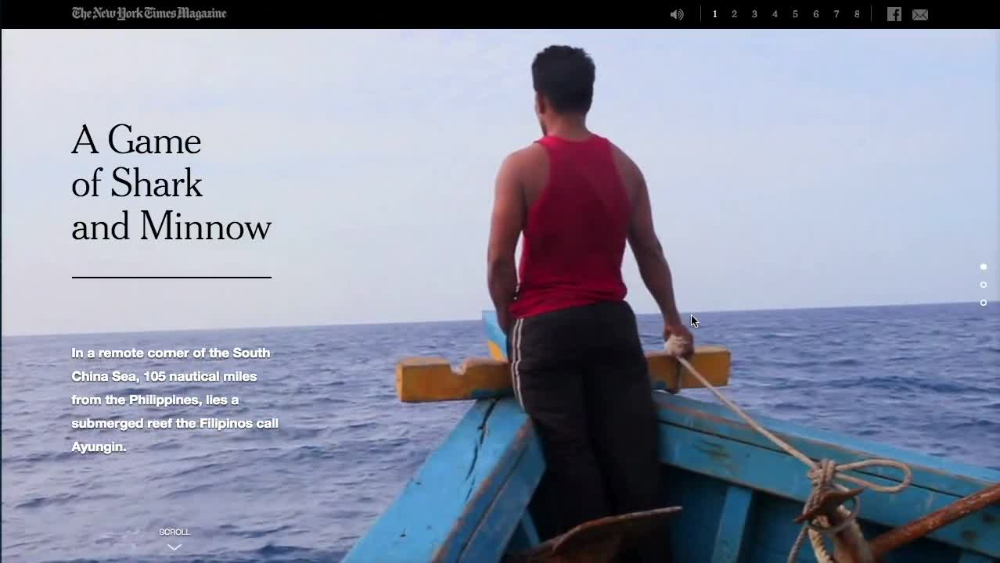 - Shark & Minnow
- NEED MORE GOOD RECENT SCROLLYTELLING
Thoughts? Suggestions? Improvements?
Additions? Deletions? Your input is critical!!!
I'll probably try to get your input on the finished deck as well - once I finish it!